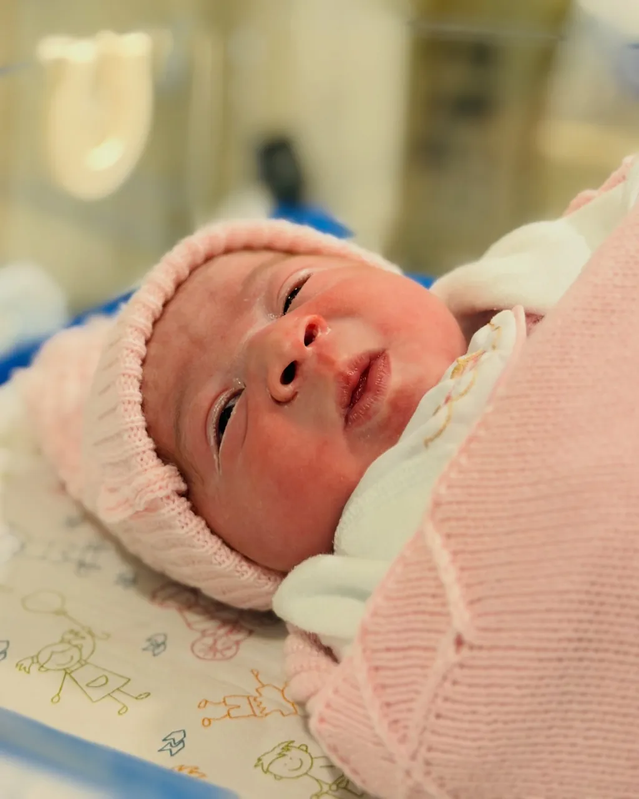
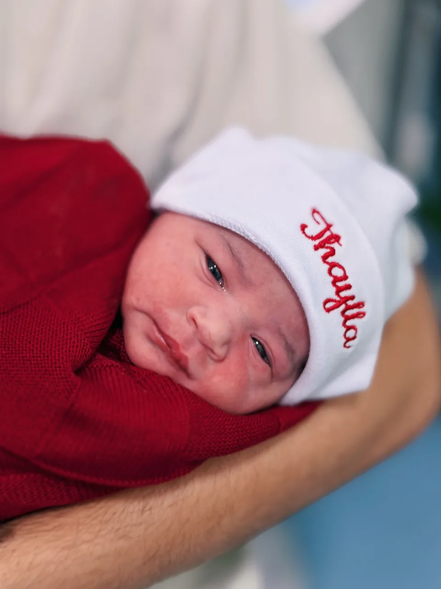
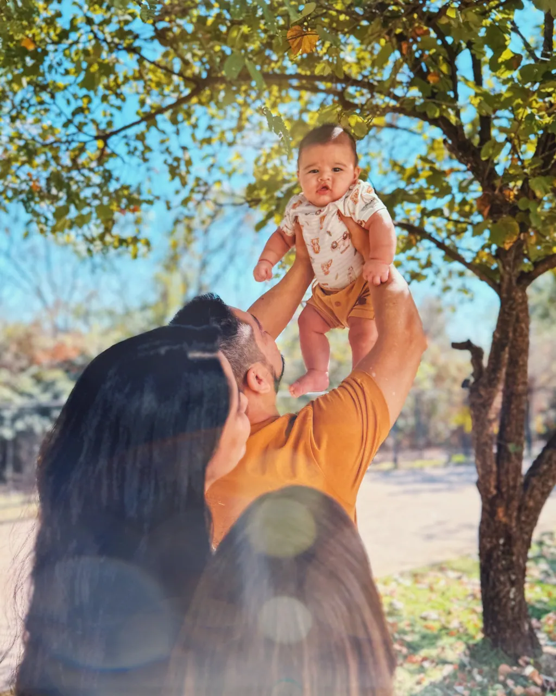
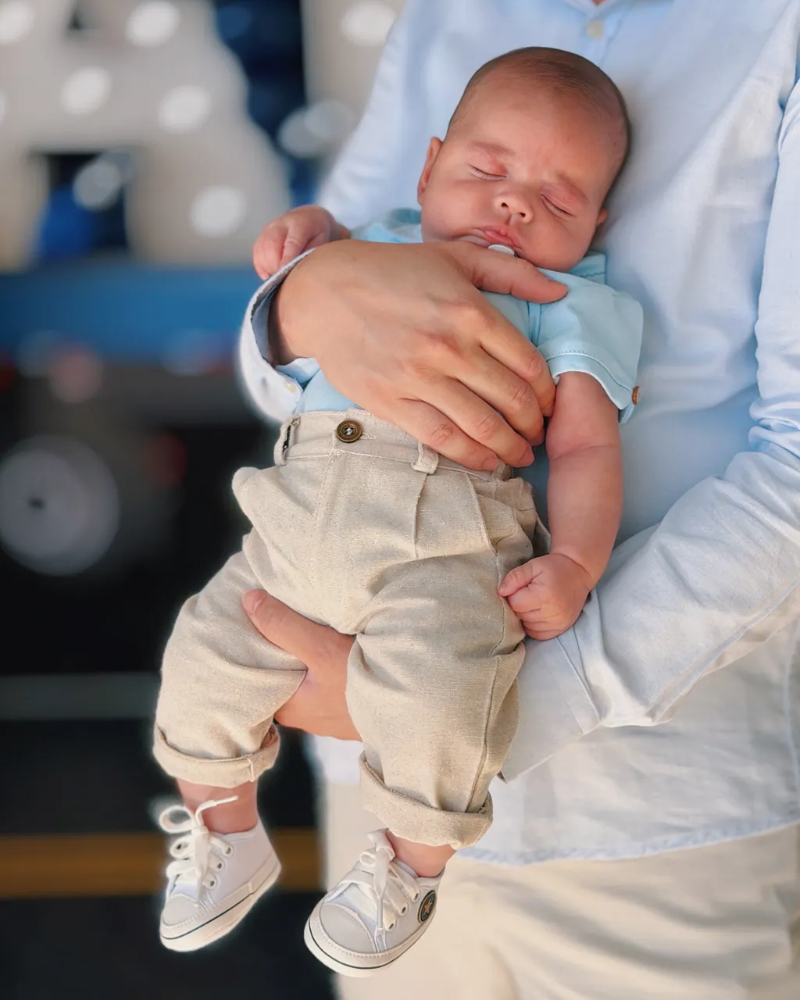
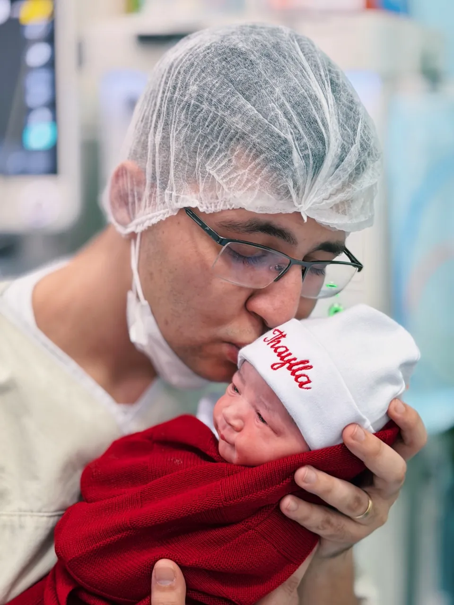
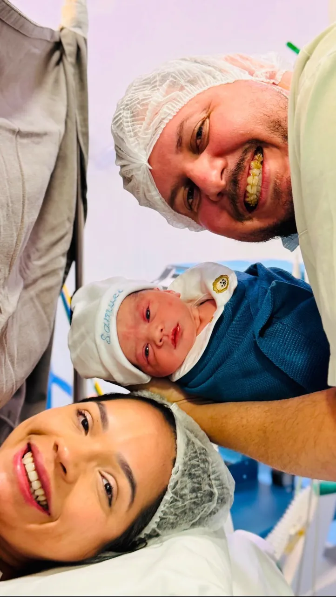

Silvoney Filmmaker · Portfólio
Ensaios e retratos.
Primeiros dias, infância, família e celebrações. Escolha um álbum para explorar.
Primeiros dias
Retratos e pequenos detalhes dos recém-nascidos.







Infância
Registros da infância ao ar livre.


Família
Bebês, crianças e suas famílias.








Aniversários
Lembranças de aniversários e celebrações.


Vamos conversar
Vamos registrar esse momento?
Me conte o que deseja registrar e a data que tem em mente. Vamos conversar pelo WhatsApp.